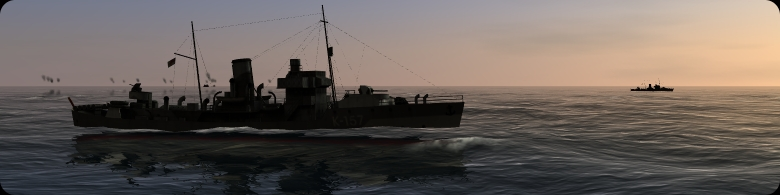

Liens
Le développment de Danger from the Deep est sponsorisé par :

Liens Danger from the Deep
- Projet sur SourceForge
- Forum officiel de Danger from the Deep (ANG)
- Forum DftD sur Mille-Sabords.com
Sites sur les sous-marins
- LinuxSSN :- Une simulation Open Source de combats sous-marins.
- uboat.net :- Une somme d'informations sur les U-Boats et leur histoire.
- Glossaire :- Une très bonne liste des termes allemands utilisés dans le monde des sous-marins.
Autres liens
- GL-117 :- Un simulateur de combat aérien.
- Thorsten's website :- Site personnel de l'un des développeurs principaux.
- Das fiese Ding :- A visiter (Allemand).
- Silk Icons :- Les icônes utilisées dans le menu viennent de ce site.
© 2006-2007 Danger from the Deep